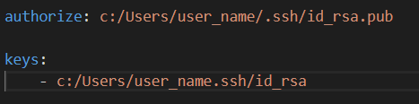
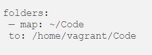
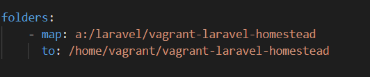
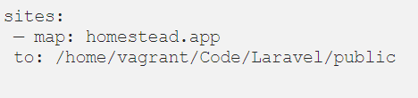
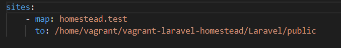
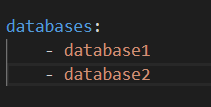
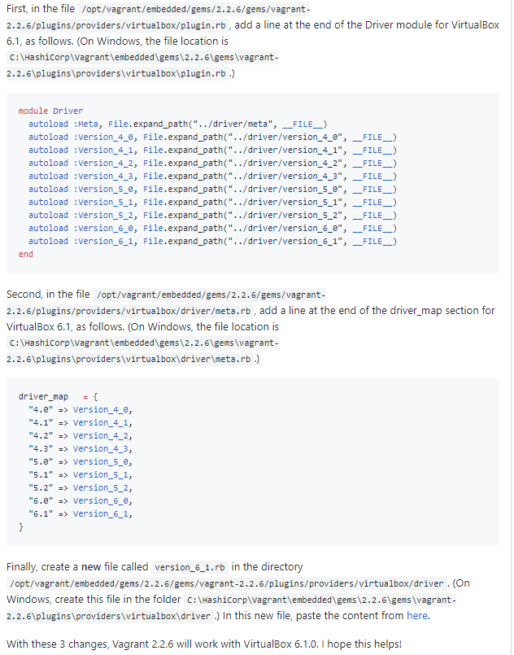

- Open Git bash terminal
- Type `vagrant box add laravel/homestead`
- cd ~
- Type `git clone https://github.com/laravel/homestead.git Homestead`
- cd Homestead
- Type `bash init.sh`
Step 2: Configuration- Check if in the /Users/user_name folder there is .ssh file, if not, run this `ssh-keygen -t rsa -C “your_email@example.com”`
- Open Homestead.yaml file
The "keys" and "authorize" will be modify according to where your Homestead folder is located. In this case, it will be
The "folders" part
In this section you will map your_project_folder to vagrant_folder. So in my case, my_project_folder is in A:/laravel/vagrant-laravel-homestead, and I would like it to map to vagrant-laravel-homestead folder in vagrant. Which will be like this
The "sites" part
In this section you will point your_site to vagrant_folder where your project is map to. So in my case, my site_name is homestead.test, and my vagrant folder is vagrant-laravel-homestead folder in vagrant. Which will be like this
You can modify the database with your_database_name in "database" part
Notes: if your Virtualbox version is not supported by Vagrant yet, you can refer the tutorials from here
To start Vagrant `vagrant up`
- Type `vagrant ssh`
To login, type `ls`
`cd your_vagrant_folder`
`composer create-project --prefer-dist laravel/laravel Your_Laravel_Project`
Open the browser and go to "192.168.10.10". You can change this to your_site_name by changing the "hosts" file in "C:\Windows\System32\drivers\etc"
To logout Vagrant, "exit"
To stop homestead "vagrant halt"
Hostname: 127.0.0.1
Username: homestead
Password: secret
Database: your_database_name